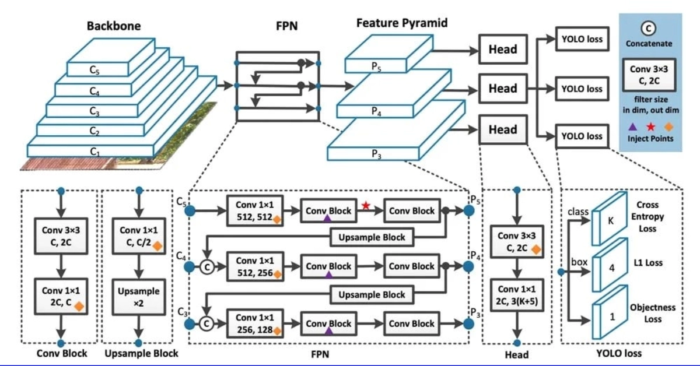

This project uses the Ultralytics Yolov8 library for object detection. This is an image classification library that is able to detect multiple classes of objects in sample images or videos.
This image is a representation of what the Yolo library is doing under the hood, and consists of many different convolutional neural network layers which are commonly used in analyzing images.